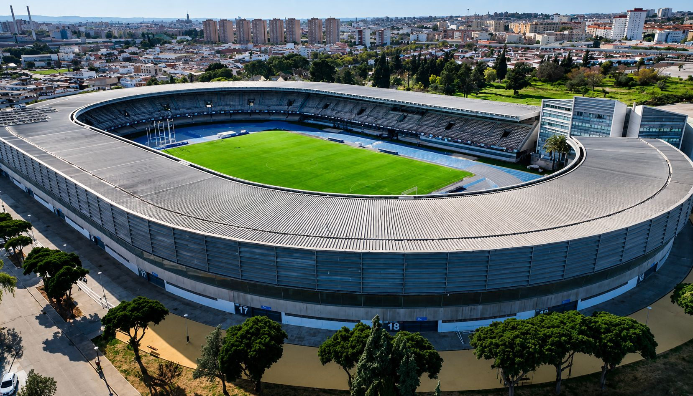

The pitch that could break Xerez CD: a ticking time bomb under the squad's feet

Photo: Diario XerecistaThe state of the pitch at the Pedro S. Garrido and at Chapín has started to take its toll in the form of injuries and threatens to affect the performance of the city's teams just as the season gets under way.
There is a problem in Jerez that has been part of the fans' conversation for far too long and yet seems to find no answer from the institutions: the state of the playing surface, both at the Pedro S. Garrido and at the Estadio Municipal de Chapín itself. It is not a minor issue or simply the complaint of a demanding fan. It is a problem that has already started to take its toll in the form of injuries and which, if not corrected, could end up affecting the sporting performance of the city's teams just as a season full of hope gets under way.
The Pedro Garrido has been dragging along deficiencies in its irrigation system for months, with dry, uneven areas of the pitch that have become a headache for the club in the middle of pre-season. It is no coincidence that, in the height of summer, Xerez CD have had to look into alternatives such as Montecastillo or Costa Ballena to complete part of their training, seeking a more reliable surface to work on. Nor is it a coincidence that Saúl Romero, one of the most exciting signings of the summer, fractured his fifth metatarsal during a routine session on that very pitch. In that particular case the injury may have been caused by a technical movement rather than simply a bump in the turf, but the episode has served to put the spotlight, once again, on facilities that are not providing the reliability a professional club needs.
Moreover, the problem is not limited to the training ground. Chapín faces a reality that few cities in the division have to manage: two teams, each with their own schedules, physical demands and maintenance needs, sharing the same pitch throughout the season. That level of use, often including training sessions, leaves a playing surface that arrives at big matches without the rest or care a competition pitch would need. Any fan who has been in the stands in recent years can recognise the bald patches, bumps and irregularities that appear as the season goes on, especially in the most heavily used areas.
And that is where the part that should truly worry clubs, fans and institutions alike comes in: the health of the players. A pitch in poor condition is not just a question of aesthetics or attractive football. It is a real risk factor. Uneven footing, sharp turns on a surface that does not respond uniformly, areas harder or softer than expected; all of this increases the likelihood of sprains, overloads, stress fractures and muscle injuries that could be avoided with proper maintenance. In divisions where clubs do not always have medical and rehabilitation staff as large as in the Primera or Segunda División, every absence counts double, both in sporting and in financial terms.
Xerez CD have a name and a history that carry weight, a fan base that keeps turning out despite the difficulties and a project that aims to return to the top of Andalusian football. But that effort runs head-on into infrastructure that is not always up to what is demanded of its players every weekend. Investing in pitch maintenance, whether by strengthening the irrigation system at the Pedro Garrido or thoroughly reviewing the state of Chapín, should not be seen as an expense but as a direct investment in the health of Xerez CD's players and, by extension, in the club's sporting performance. The alternative is to keep playing, quite literally, with fire.
The reality, moreover, is that in Chapín's case a simple patch-up will not solve the underlying problem. After years of accumulated wear, what the municipal stadium needs is to have its pitch completely lifted and relaid from scratch, a major project requiring significant financial outlay that, predictably, will not be easy to take on. But Jerez deserves a stadium worthy of its people and its standing, a pitch fit for a city that supports two football projects and, above all, for a Xerez CD whose name and history deserve to play on a surface in proper condition. It is not a whim: it is necessary work that Jerez's institutions should stop putting off.
🇪🇸 Leer en español ← Back to home